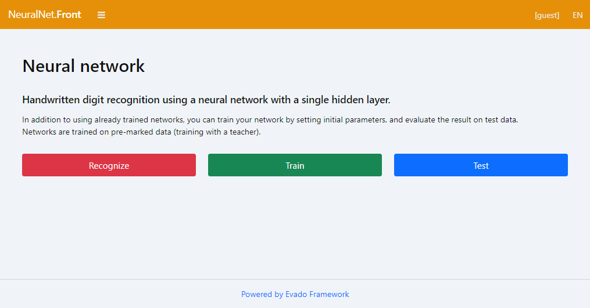

Introduction
Neural Net is an app for training, testing, and using neural networks to recognize handwritten digits. The app is written in modern JavaScript and has open source code. Built on Evado Declarative Framework.
The ready-to-run app is available on public repository.